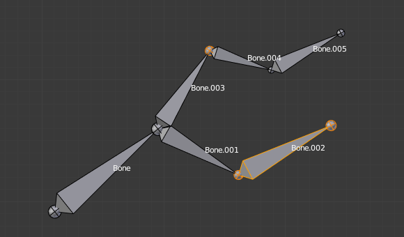
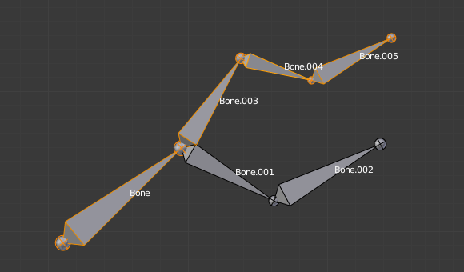

选择¶
在 编辑（Edit）模式 和 姿势（Pose）模式 下你能够选择和编辑骨骼。 在这里，我们主要是看看怎么在 编辑（Edit）模式 选择骨骼. 在 姿势（Pose）模式 下选择骨骼是和编辑（Edit）模式除了少数的几个不同，其它都是类似的，除了少数的几个不同的见 posing part 部分。
类似于网格的顶点/边选择（ vertices/edges selection ）, 在 编辑模式 有两种方法来选择整个骨骼：
- 直接选择骨骼的body（主体）部分。
- 选择它的两个关节（首端和尾端）。
了解这一点是很重要的，因为选择骨骼的末端最有可能导致不明显的行为和你实际选择的那一个骨骼可能不是你看到的。
请注意，与网格绘制类型不同，骨架绘制类型对选择行为没有影响。换句话说，可以以相同的方式选择骨骼的关节或主体，而不管选择的骨骼可视化。
Selecting Bone Joints 选择骨骼关节¶
要选择骨骼的关节，你有标准选择（ standard selection ）方法。
Inverse Selection¶
如上所述，你必须记住，这些选择工具仅适用于骨骼的关节，而不是骨骼的主体。
例如，反向 选择选项 Ctrl-I 反转骨骼关节的选择，而不是骨骼的选择（参见 反选 ）。
记得只有选择了它的关节两端才是选择了一个骨骼。所以，当选择骨骼的末端被反选，一套新的骨骼将被选择。

Two bones selected. 选择两个骨骼。 |

The result of the inverse selection |
{kind=link}
Selecting Connected Bone Joints¶
另一个例子是：当你选择一个连接到父骨的骨骼的首端（root），你也选择了其父骨的尾端（tip）（反之亦然）。
Note
记住，当选择骨骼的关节时，父骨的尾端是与其子骨的首端将同时被选择。
Selecting Bones 选择骨骼¶
在骨骼的主体(body)部分 RMB -右击，你将选择骨骼（同时自动选择其首端（root）和尾端（tip）。
使用快捷键 Shift-RMB ，你能够添加或移除选择。
你也有一些居于它们的关系 advanced selection（高级的选择） 的选项。
你也可以使用 linked selection（链接选择） 的快捷键L一次选择激活（最后选择的骨骼）骨骼链中所有的骨骼。

A single selected bone. 单一的骨骼选择。 |

使用 |
{kind=link}
- Mirror 镜像
Shift-Ctrl-M - 将选择从一侧翻转到另一侧。
- Pick Shortest Path 选择最短路径
Ctrl-RMB - 选择从激活骨骼到鼠标下方的骨骼的路径。
Deselecting Connected Bones¶
这是一个很微妙的骨骼选择。
当你有几个连接的骨骼被选择，如果你取消了一个骨骼，你将实际上取消了它的尾端的选择，而没有取消连接另一根骨骼的首端。
要理解这一点，请看图。 在选择的骨骼链取消骨骼选择。。
|
两个选定的骨骼。 |
使用 Shift-RMB 快捷键后的"Bone.003"：
- "Bone.003" 的尾端 (同是它也是Bone.004的首端) 被取消了选择。
- "Bone" 是 "Bone.003" 的父骨骼.因此 "Bone.003" 的首端同时也是Bone的尾端. 由于Bone 仍然保持选择,同样 Bone.003 都仍然保持选择. 。
More/Less 加选/减选¶
参考
- 加选
Ctrl-NumpadPlus - ToDo.
- 减选
Ctrl-NumpadMinus - ToDo.
- 父
[, 子] - 您可以取消选择激活骨骼并选择其直接父级或它的子级之一。
- Extend Parent延长父级
Shift-[, Extend Child延长子级Shift-] - 与 Parent / Child 类似，但保持激活i骨骼的选择。
Similar 类似¶
参考
Shift-G- Children
- 选定内容扩展到所有层次的子级骨骼。
- Immediate Children 直接子级
- 选定内容扩展到所有直接子级骨骼。
- Siblings 同级骨骼
- 选择与激活骨骼具有相同父级的骨骼。
- Length 长度
- 在指定的 阈值 下选择具有相似骨骼长度（尾端和首端之间）的骨骼。
- Direction方向 (Y axis)
- ToDo.
- Prefix 前缀
- ToDo.
- Suffix 后缀
- ToDo.
- Layer 层
- ToDo.